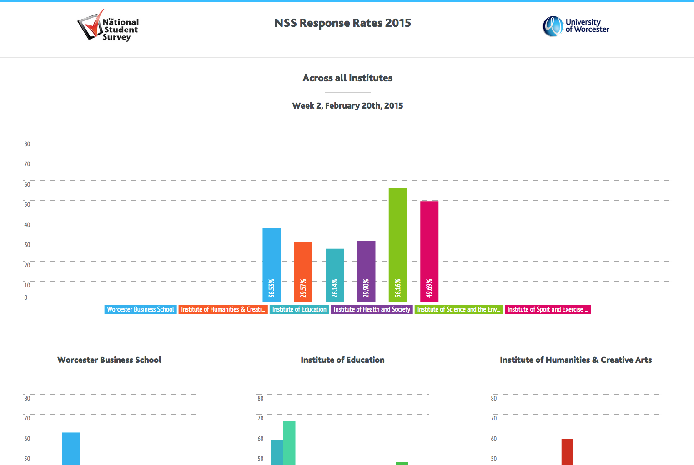
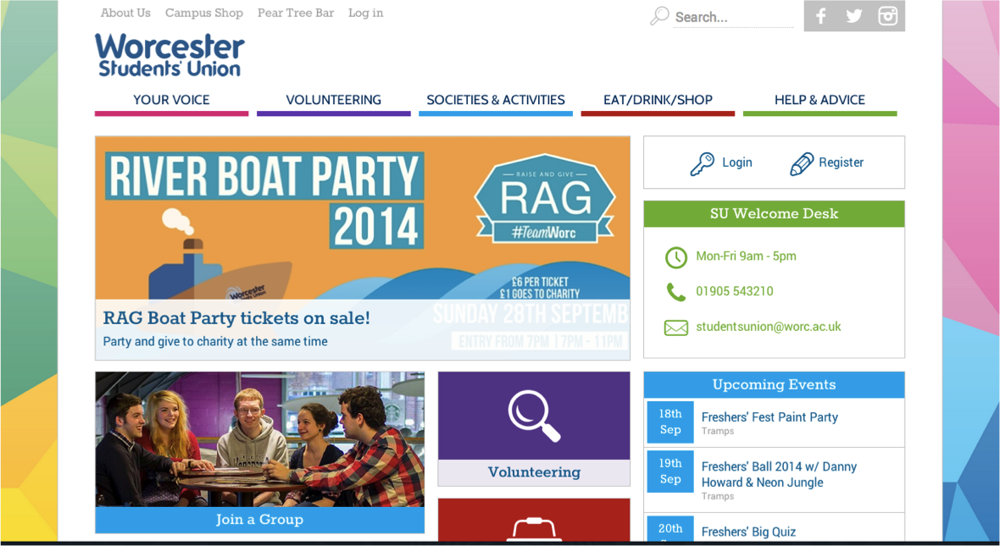
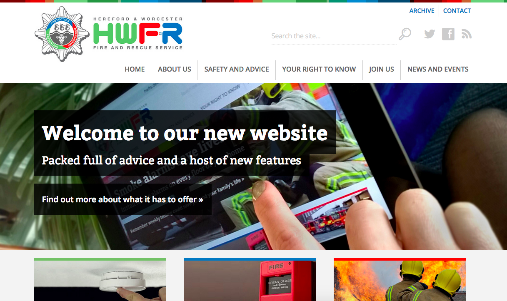

Projects
Take a peek at our work
Our Past Work
Now's your chance to get up close and personal with some of our work as we've compiled a list of some of our proudest works for you.
As you'll see, we have worked on a wide range of projects, but there's one thing which always remains the same; our passion, dedication and love for each of them!
NSS (National Student Survey) - University of Worcester
The University of Worcester NSS team contacted the Media Lab to help visualise and showcase the performance of each of the Universities schools' responses to the National Student Survey, completed by all final year students across the country.
The data visualisation needed to be clear and simple to enable users to quickly compare completion results as each week of the survey progressed.
The project continues to evolve with the Media Lab team researching data visulisation and to continue supporting the NSS team at the University of Worcester with weekly graphical data representations.
Worcester Students' Union
Worcester Students' Union approached the Media Lab with a desire to update the previous SU site to inject some more personality into the design to appeal further to students, and make the site more accessible to the wide range of devices used by students.
The Media Lab team worked with the Students' Union team to develop a bright and engaging concept for the site taking inspiration from other Student Union sites around the country, with a challenge of adapting and working within the requirements of a unique content management system utilised by the SU. The site is also now fully responsive to adapt to the wealth of devices used by the student market, such as phones and tablets.
The Media Lab continues to support and work with the WSU with further improvements to the site and to keep the design refreshed periodically to suit the current theme or time of year.
Hereford & Worcester Fire and Rescue Service
The WBS Media Lab was tasked in partnership with the Hereford & Worcester Fire and Rescue service with delivering a brand new site and content management system for the service.
The Media Lab team worked closely with the HWFRS team to understand detailed requirements, tackle a complex content structure into a simpler structure, and bring the design up to date with a responsive site for all devices.
The project was around 8 months from kickoff to go live, and the partnership benefitted both the Media Lab team with client experience and developing for a wide audience, and for the HWFRS team with in-house training and simplifcation of workflows and information management.